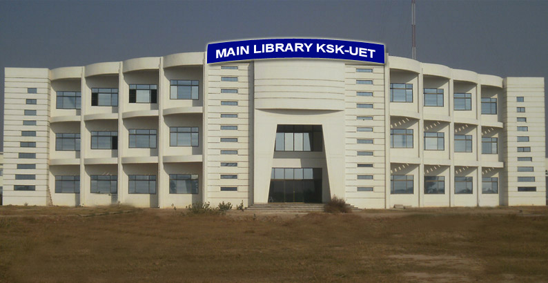
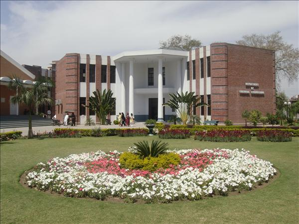
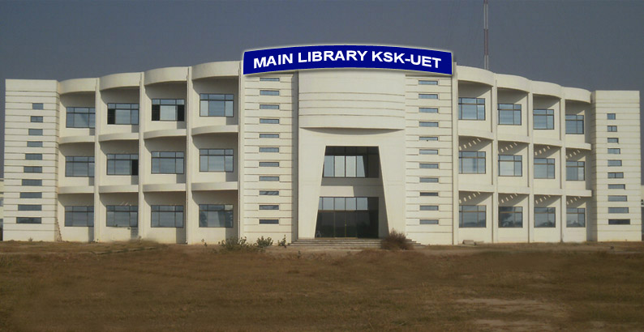
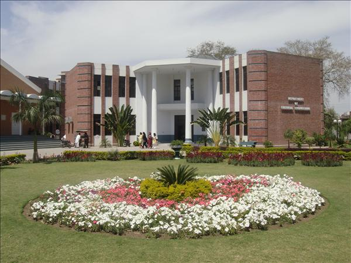

Historic Profile The University of Engineering and Technology (main) located in the northern part of Lahore on the historical "Grand Trunk Road (G.T. Road)", near the magnificent Shalimar Gardens built during the great Mughal Empire. The institution started its career in 1921 as the ‘ Mughalpura Technical College ’. Later it became the ‘Maclagan Engineering College’, a name given to it in 1923 when Sir Edwards Maclagan, the then Governor of the Punjab who laid the foundation stone of the main building, now called the Main Block, which still retains its majesty despite the wear and tear of over eight decades. At that stage the institution offered courses of study in only two disciplines; Electrical Engineering and Mechanical Engineering In the year 1932, the institution was affiliated with the University of the Punjab for award of a Bachelor's Degree in Engineering. In 1947, at the time of independence, the Institution was offering well-established B.Sc. Degree Courses in Civil, Electrical and Mechanical Engineering. In 1954 it started a Bachelor's Degree course in Mining Engineering, the first-ever of its kind in the country. However, the real expansion and development of the institution commenced in 1962 on its transformation into the ‘West Pakistan University of Engineering & Technology’, and within a few years Bachelor's Degree Courses were started in Chemical Engineering, Petroleum & Gas Engineering, Metallurgical Engineering, Architecture, and City & Regional Planning Later, the University started to develop its postgraduate programs, and by 1970's it was offering Master's Degree Courses in various specializations of engineering, architecture, planning and allied disciplines. Later, Ph.D. Degree Program was also instituted in a number of disciplines.Later on renamed University of Engineering & Technology in 1972.With phenomenal increase in students enrollment in seventies, the University established an Engineering College at Taxila in 1975, which later became an independent University in 1998 as the University of Engineering and Technology, Taxila.
The National Library of Engineering Sciences has significantly improved its book holdings and now it is the biggest engineering Library of the country. The total collection of the library is 1, 40,000 which includes more than 1, 00,000 Books, 25,000 Journals,5000 theses and 1500 CDs. The NLES is a lending library and most of its collection is available to the members on loan basis.
Transportation facility is provided to both day scholars & Hostel students.
PC-I for purchase of 20 new buses has been submitted to HEC Isalamabad
HALLS OF RESIDENCES (Senior Warden Prof. Dr. Fiaz Hussain Shah)
The University has ample provisions for hostel accommodation. It has fifteen halls of residence with accommodation for about 2700 students. The halls reflect history of the institution through variations in the architectural styles over the last half a century. Some of them are of the pre-independence period, inherited from the former Maclagan College of Engineering or the Sikh National College whereas others were built over a period of quarter of a century since the inception of the University. Al-Zohra Hall, Khadeeja Hall and Ayesha Hall are for girl students having accommodation capacity of 425 students. The Senior Warden's Offices are housed in the Administration block. Each hall is looked after by a Resident Tutor. Many aspects of the life in halls are managed by the students themselves such as the boarding arrangements. The halls are provided with common rooms, canteens, prayer rooms, internet facility and other common utilities. The students are required to abide by the rules and regulations governing residence in the University halls and are encouraged to develop community life conducive to healthy growth of the social aspects of their personalities. The names of the halls of residence are as follows.